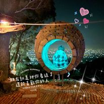
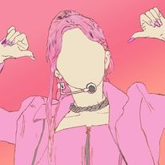
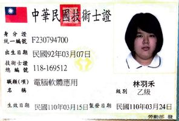
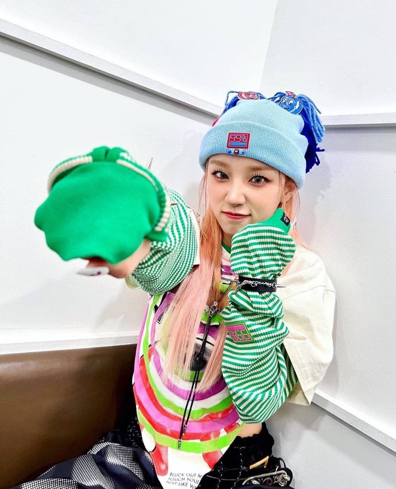
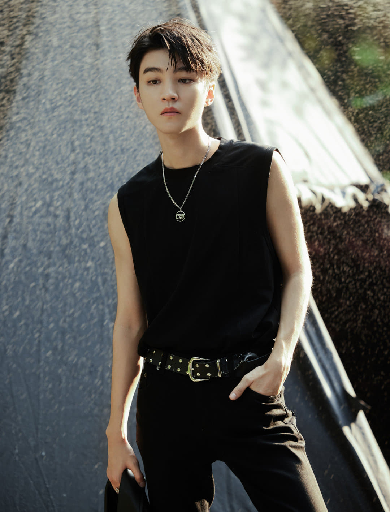

YuHe Lin的個人網頁
林羽禾 YuHe Lin

座右銘

累的時候說累也可以
想放棄的時候就放棄
做自己想做的事，真的能夠幸福就好了。
/*------------------------------------------------------------------*/
證照
●電腦軟體應用乙級

●電腦軟體應用丙級
我的偶像
在平常最常做的事情就是在追星，有時候一看可以看一整天
-宋雨琦 YuQi Song-
<維基百科>

TFBOYS-
<維基百科>

社交平台
Instagram
facebook
YUHE Web&110111131@mail.aeust.edu.tw.